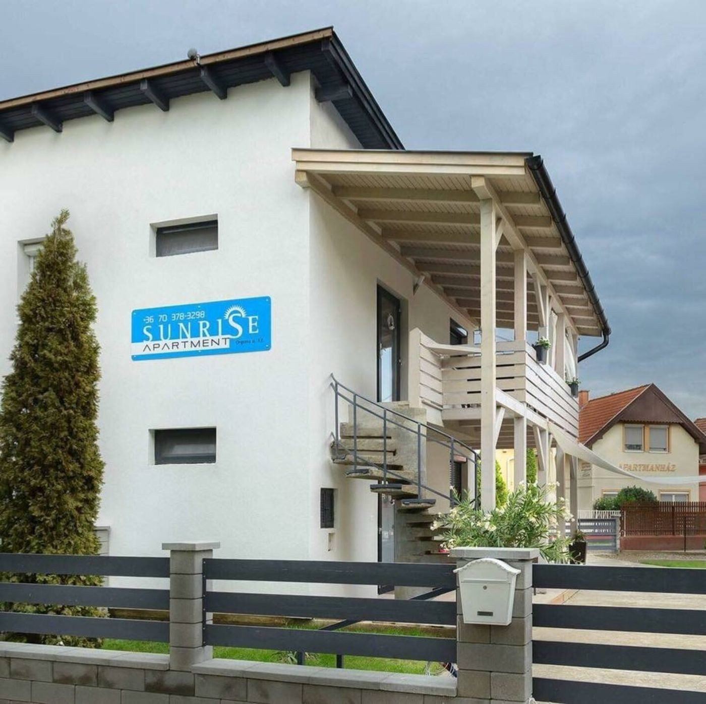
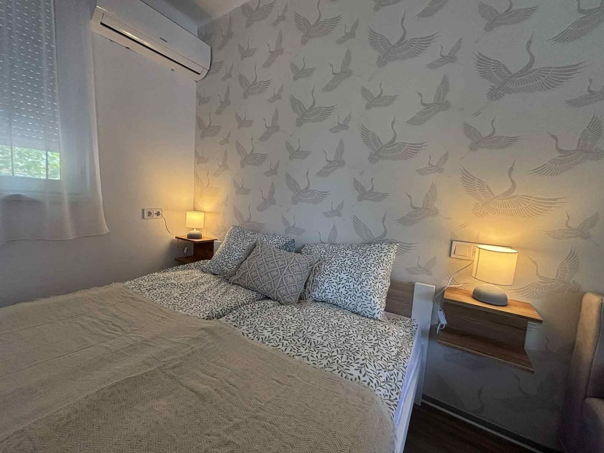
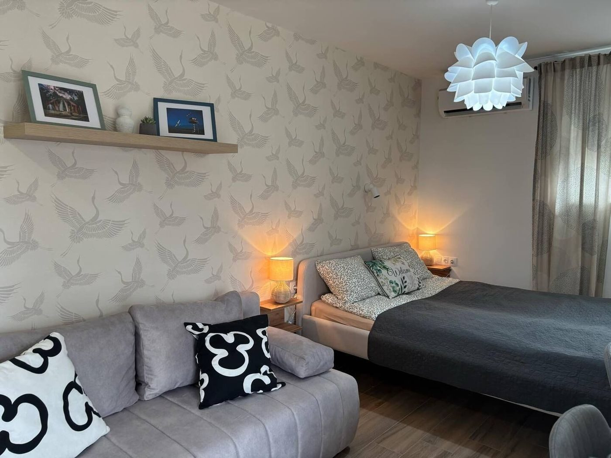

SunRise-ház
Hajdúszoboszló, Keleti utca 51/a
Kétszintes ház négy apartmannal: mindegyiknek külön bejárata és saját terasza van. A közös kertben grillező, tűzrakóhely és bogrács, a gyerekeknek két hinta, csúszda és trambulin, az autó a zárt udvarban parkol – ingyen.
- 4 apartman
- Kert játszótérrel
- Ingyenes, zárt parkolás
Fotók hamarosan
SunRise Földszint
4 fő · 1 hálószoba
Ár a naptárbanNaptár és foglalás

SunRise Földszint B
4 fő · 1 hálószoba
23 500 Ft / éjtőlNaptár és foglalás

SunRise Emelet
4 fő · 1 hálószoba
24 900 Ft / éjtőlNaptár és foglalás
Fotók hamarosan
SunRise Emelet B
4 fő · 1 hálószoba
Ár a naptárbanNaptár és foglalás